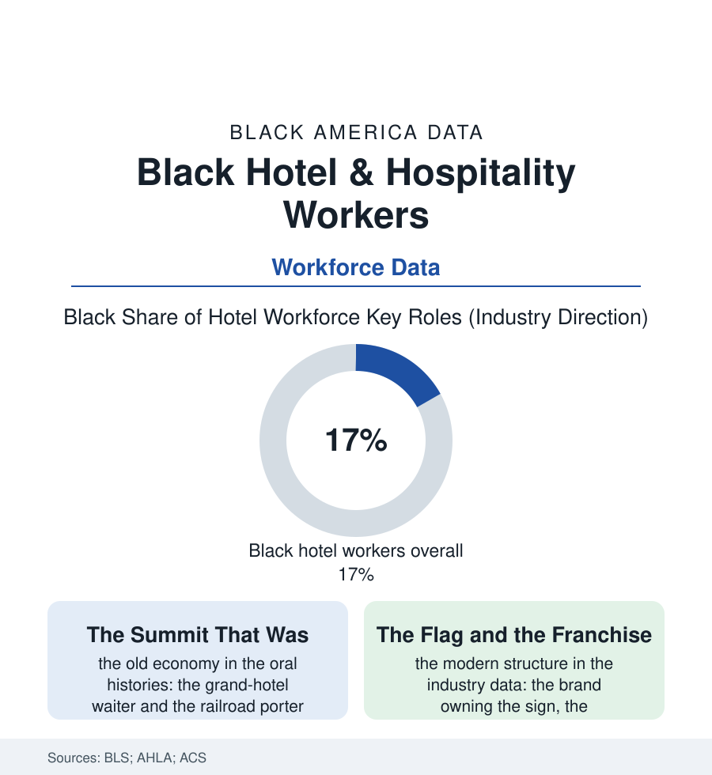

Black Employment
The Hospitality File: Black Workers in America's Hotels
The hotel was once the summit of Black service work — the waiter's tuxedo economy — and is now a franchised floor of housekeepers and desk clerks under other people's flags. The hospitality ledger.

The hotel holds a singular place in the Black working imagination: the grand hotel's dining room was, for a century, one of the economy's summits — unionized, tipped, tuxedoed — and the industry's reinvention into flags and franchises converted that summit into one of its floors. Something over 17% of America's hotel workforce is Black, concentrated where the reinvention left the wages lowest. This article reads the hospitality file.
From the Dining Room to the Housekeeping Cart
The old economy deserves its evidence: the waiters of the great hotels — in the cities of this atlas, the Black dining-room crews were institutions, their headwaiters civic figures, their locals among the service unions' strongest — the wages and tips supporting, in the family data, the college funds and the mortgages of the professional class's first generation; the bellmen and doormen of the famous houses as the city's information aristocracy. The industry's restructuring dismantled the structure that made it so, piece by documented piece: the dining room's decline (the hotel restaurant's surrender to the lease-out and the breakfast buffet), the brand-franchise unbundling that separated the flag on the tower from the employer on the paycheck — the worker's grievance addressed to a management company, her building owned by a real-estate trust, her uniform's logo licensed from a brand that employs none of them — and the housekeeping department's conversion into the industry's labor core: the rooms-per-shift quotas in the union research (the count climbing across the decades as the staffing models lean), the injury data of the section's occupational shelf (the housekeeper's shoulders and back at rates rivaling the warehouse file's), the pandemic's 'cleaning on request' conversion — the daily room service of a century reclassified as an opt-in amenity, its labor line permanently thinned in the properties' new baselines, the guests' environmental goodwill underwriting the payroll saving in the industry's own announcements.
The Union, the City, and the Desk
The counterweight, where it stands, is the file's most successful modern labor story told in the contract data: the hotel workers' union's city campaigns — the housekeeper workload clauses and the panic-button ordinances (the safety laws won city by city after the harassment file's reckoning), the living-wage ordinances of the gateway cities, the 'one job should be enough' standard whose arithmetic the wage file of this section keeps confirming — the union hotel's housekeeper, in the matched data, out-earning and out-benefiting her nonunion counterpart across the street at margins the industry rarely grants any occupation. The desk and the office tell the pyramid's other half in the management tables: the front-of-house roles' diversity improving by the cohort (the desk as the industry's most photographed job), the general managers' and owners' rows barely moving — the franchise ownership programs of the great brands publishing their Black-owner counts in the dozens against the industry's tens of thousands of flags, the business file's hotel shelf standing, as in the restaurant file, as an ownership frontier the brands court and the capital file rations. The forward data are the travel economy's: the Black travel boom of the business file filling the rooms (the $145 billion demand arriving, in the industry's own marketing pivot, at properties whose staffs mirror the guests more than their ownership does), the labor shortage's wage corrections, the automation file's modest hotel chapter (the check-in kiosk, the chatbot concierge — the housekeeper's cart, notably, unautomated, the bed's corners still folded by the hands this file counts). The tuxedo is gone and the flag is a license. What remains constant across the century is the file's arithmetic: an industry that sells welcome, staffed at its base by the people this atlas follows, still negotiating — room by room, ordinance by ordinance — the price of being the warmth in someone else's lobby.
Reading the Hospitality Data
The hospitality file is the employment section's mirror of manners: the welcome is real, and so is the wage. The BLS publishes the headcount. The union contracts — and the housekeepers' shoulders — publish the terms, and the file reads them in that order on purpose. The doorman's grandchildren work the same doors. The file insists their names be spelled right.
More in Black Employment
The Black Unemployment Rate: The Two-to-One Pattern
Black unemployment runs at roughly twice the White rate — 5.5 percent against 3.3 percent in annual averages — a ratio stable across five decades of federal data. How it is measured and why it persists.
Black Median Weekly Earnings: The 80-Cent Ratio
Black full-time workers earn a median of about $900 a week — roughly 80 cents for every dollar White workers earn. The BLS earnings data by group, gender, and occupation.
Black Labor Force Participation: Working at National Rates
Black labor force participation runs at roughly the national rate — and Black women participate at higher rates than White women. The BLS participation data.
Source: U.S. Bureau of Labor Statistics; American Hotel & Lodging Association workforce data; UNITE HERE research; U.S. Census Bureau ACS occupation data.